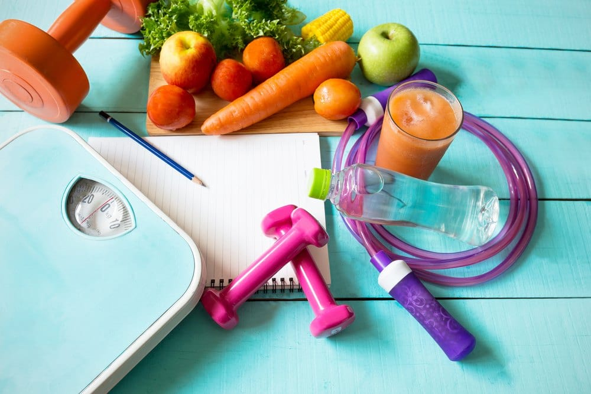

Cristina Zanfirescu
Sfaturi in nutritie
Prima regulă a unei diete de succes sunt schimbări ușor de menținut pe termen lung. Asta înseamnă a planifica mesele și gustările și nu a sări peste ele. În acest fel, veți fi mulțumit și vă veți putea abține de la alimentele bogate în grăsimi.
Diferenta dintre succes si esec

În zilele noastre cu toții avem dorințe și vise. Unii chiar le scriu și le numesc simplu SCOP. Trebuie să știm că scopul nu este chiar ceea ce gândim și atât. Este o recompensă mai exact. O recompensă ce apare dacă facem lucruri concrete. Trebuie să schimbăm ceva la alimentație, să facem sport specific pentru ceea ce ne dorim a obține. Trebuie să schimbăm obiceiurile. Lucrurile pe care trebuie să le schimbăm sunt adevărate provocări. A atinge scopul este de fapt a încorpora un nou comportament, nu a schimba lucrurile sau formele și atât.